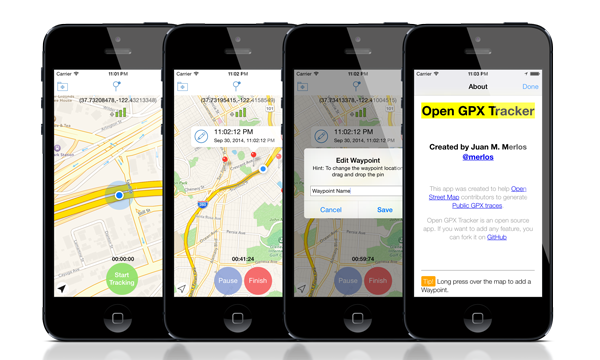
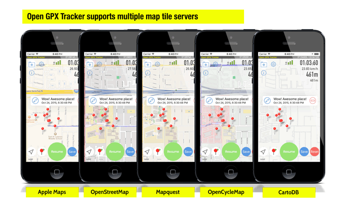

GPX Tracker for iPhone, iPod & iPad


Open GPX Tracker app for iOS devices allows you to create GPX files. Track your location, add waypoints and send your logs by email. No time restrictions, no ads, no in-app-purchases. Open GPX tracker is an open source app.
Open GPX Tracker is ideal for:
- Creating routes and waypoints for editing Open Street Map.
- Publishing Open Street Map Traces.
- Creating real GPX files for testing your iOS apps in Xcode.
Main Features
- Displays tracking information in a map
- Displays current speed, distance and tracked time.
- Supports multiple map sources (Apple Maps, OpenStreetMap and CartoDB)
- Pause / Resume tracking
- Add waypoint to user location
- Add waypoint to any place in the map with a long press
- Edit waypoint name
- Drag & Drop waypoint pin
- Remove waypoints
- Send by email saved session (track + waypoints)
- Load on map a saved session and continue tracking

License
The source code of this app is distributed under the following license:
Open GPX Tracker app for iOS. Copyright (C) 2014-2015 Juan M. Merlos (@merlos)
This program is free software: you can redistribute it and/or modify it under the terms of the GNU General Public License as published by the Free Software Foundation, either version 3 of the License, or (at your option) any later version.
This program is distributed in the hope that it will be useful, but WITHOUT ANY WARRANTY; without even the implied warranty of MERCHANTABILITY or FITNESS FOR A PARTICULAR PURPOSE. See the GNU General Public License for more details.
You should have received a copy of the GNU General Public License along with this program. If not, see http://www.gnu.org/licenses/.